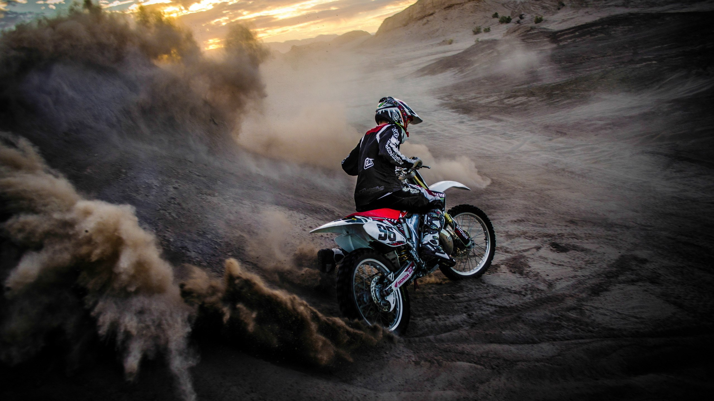
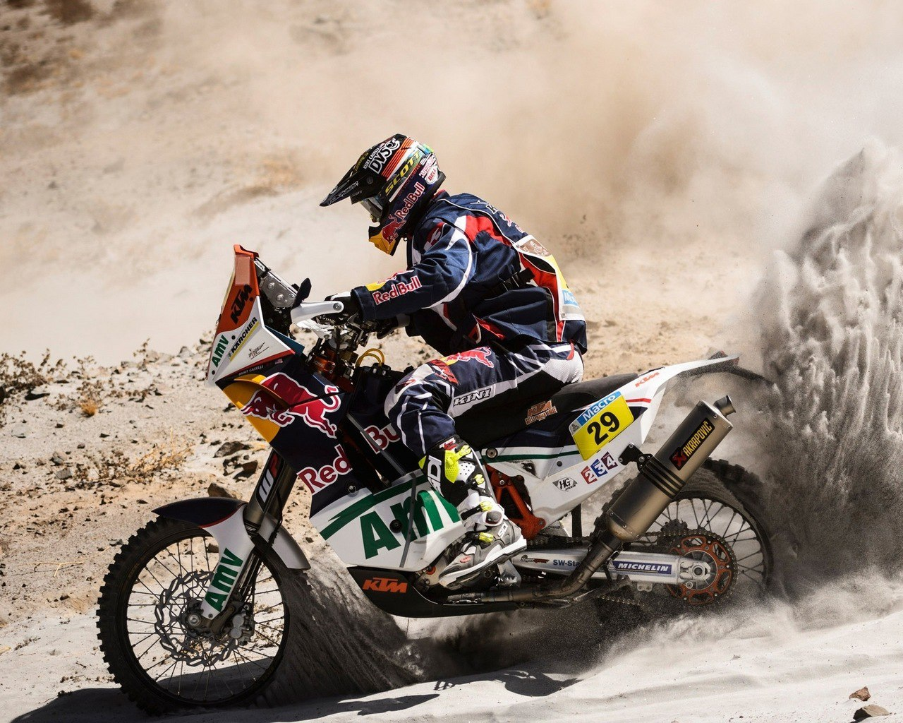

Мото Школа «RIDER» - это не просто школа где Вас научат ездить прямо, и поворачивать на мотоцикле, это школа «правильной» езды на мотоцикле, и не важно, какой у Вас, мотоцикл. В нашей школе «правильного» вождения Вам дадут: базовые, и специальные знания езды на мотоцикле, в зависимости от класса мотоцикла который вы хотите приобрести, или у Вас, уже есть. Существуют и другие Школы, но только наша, даст вам 100% уверенность в себе, и в своих умениях езды на двух колесном коне, в рекордные сроки. Также у нас есть свой канал на «YouTube» где будут много хороших и качественных видео , а самые лучше ученики попадут в наши выпуски . Не сомневайтесь – пробуйте. Мы вас ждем. Мото школа «RIDER»
Саша и мотоцикл
